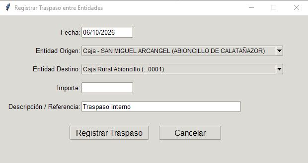
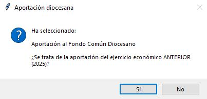
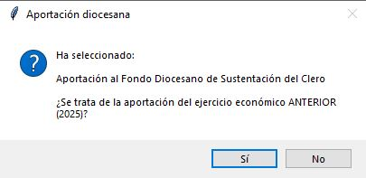
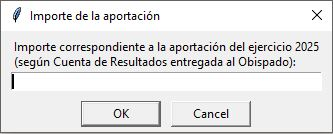
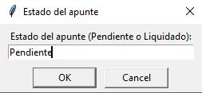

5. Gestión de apuntes¶
5.1 Registrar un apunte de ingreso o gasto¶
- Ve a la pestaña Apunte.
- Rellena los campos obligatorios: fecha, tipo (ingreso o gasto), entidad (se listarán las cuentas corrientes asignadas y la caja de la parroquia actual), estado («Liquidado» o «Pendiente»), concepto e importe. Aunque no es obligatorio, conviene añadir una pequeña descripción para identificar a qué corresponde el gasto o el ingreso.
- Si el apunte debe dividirse en dos conceptos o si, tratándose de un ingreso por servicios, se quiere activar la gestión automática, pulsa Desglosar apunte.
- Si el ingreso es una donación, elige el donante, solo si se quiere poder emitir el certificado de donaciones.
- Guarda el apunte.
Vídeo: Gestión de apuntes (1): registro de un apunte de ingreso o gasto
5.2 Uso del desglose¶
El desglose es especialmente útil en dos situaciones:
- Gasto que se debe repartir entre dos conceptos distintos. Indica el importe que corresponde al concepto 1 y el que corresponde al concepto 2. Deben sumar el importe total del apunte.
- Ingresos por servicios religiosos (funerales, bodas o bautismos). Si el ingreso por servicios corresponde a un funeral, una boda o un bautismo, se puede activar el desglose para que el programa calcule automáticamente la parte que corresponde a gratificaciones al sacerdote. Marca la casilla «Servicios religiosos» para funerales y bodas. El programa calculará el desglose del importe total correspondiente a «Ingreso por servicios» y el correspondiente a «Donativos con fin específico» (gratificaciones al sacerdote), y rellenará los campos necesarios. Si fuera un ingreso por bautismo, marca además la casilla «Bautismo». Esto modificará el desglose y el importe total, de acuerdo con las cantidades establecidas por la Diócesis para este servicio.
En estos casos se generará un apunte de gasto automático, correspondiente a la gratificación del sacerdote, que quedará registrado como pendiente. Cuando se haga efectivo el abono, se deberá modificar su estado a «Liquidado».
Vídeo: Gestión de apuntes (2): uso del desglose
5.3 Registro de apuntes especiales¶
Traspasos¶
Para registrar transferencias entre cuentas corrientes de una parroquia, y entre sus cuentas y su caja, se usa el registro de traspasos.
- Ve a la pestaña Apunte.
- Haz clic en Registrar traspaso.
- Rellena los campos del formulario: fecha, entidad de origen, entidad de destino, importe y, opcionalmente, descripción o referencia.

- Haz clic en Registrar traspaso.
Apuntes pendientes del ejercicio anterior¶
Este registro hace falta la primera vez que se usa el programa, si el ejercicio anterior no se gestionó con el Gestor de Economía Parroquial (GEP).
El programa gestiona automáticamente el cierre de un ejercicio. Al cerrarlo guarda la información, genera los informes y abre el ejercicio siguiente con los datos necesarios. Los apuntes pendientes del ejercicio que se cierra quedan en el listado marcados como del ejercicio anterior: no alteran la cuenta de resultados ni las aportaciones del ejercicio actual, pero permiten cambiar su estado al liquidarlos, para que la conciliación de saldos sea coherente.
Al cerrar un ejercicio, el programa genera automáticamente los apuntes de gasto de las aportaciones al Fondo Común Diocesano y al Fondo de Sustentación del Clero, y los guarda como pendientes (la Diócesis carga esos recibos en los primeros meses del año siguiente). En el nuevo ejercicio se marcan como liquidados cuando se abonan.
Si no se usó el programa en el ejercicio anterior, hay que registrar manualmente esas aportaciones y los apuntes que hubieran quedado pendientes.
Registro de un apunte del ejercicio anterior
- Ve a la pestaña Apunte.
- Marca la casilla «Registrar apunte de ejercicio anterior». El programa borrará la fecha y advertirá de que debe introducirse una fecha de un ejercicio anterior al activo.
- Rellena la fecha del ejercicio anterior que corresponda.
- Rellena el resto de los campos.
- Guarda el apunte.
Registro de las aportaciones del ejercicio anterior
- Ve a la pestaña Apunte.
- En «Tipo» selecciona «Gasto».
- En «Concepto» selecciona «Aportación al Fondo Común Diocesano» o «Aportación al Fondo Diocesano de Sustentación del Clero», según convenga.
- El programa preguntará si se trata de la aportación del ejercicio anterior. Contesta que sí e introduce el importe.



- Indica si el apunte ya está «Liquidado» o está «Pendiente».

El apunte quedará registrado y se puede ver en Listado de apuntes.
Vídeo: Gestión de apuntes (3): registro de apuntes especiales
5.4 Edición de apuntes¶
- Ve a la pestaña Listado de apuntes.
- Localiza el apunte. Puedes usar los filtros de fecha, tipo, entidad, concepto 1, concepto 2 y estado, o la búsqueda por descripción. Los traspasos se filtran eligiendo «Traspaso entre entidades bancarias» en Concepto 1, o escribiendo «traspaso» en la búsqueda.
- Haz doble clic sobre el apunte o pulsa Editar seleccionado.
- Guarda los cambios si has modificado el apunte.
- Si no quieres cambiar nada, pulsa Limpiar formulario.
Limitaciones¶
- Los apuntes automáticos normalmente solo permiten cambiar el estado.
- Los apuntes del ejercicio anterior tienen la mayoría de campos bloqueados: solo se puede cambiar su estado.
- Los ingresos por servicios religiosos o bautismo tienen restricciones de edición para evitar desajustes. El ingreso queda en estado «Liquidado» y no se puede cambiar.
- Los apuntes de un traspaso no permiten edición. Si hay que corregirlos, se anulan y se registran de nuevo.
Vídeo: Edición de apuntes (I): filtros de búsqueda y edición
5.5 Anulación y reactivación¶
- Selecciona el apunte en Listado de apuntes.
- Pulsa Anular seleccionado.
- Los apuntes anulados pueden reactivarse, salvo los de aportaciones del ejercicio anterior. Si hay que anularlos por un error que no se puede editar, se registran de nuevo.
Al reactivar un ingreso por servicios religiosos, el ingreso queda en estado «Liquidado» y el gasto asociado se reactiva como «Pendiente».